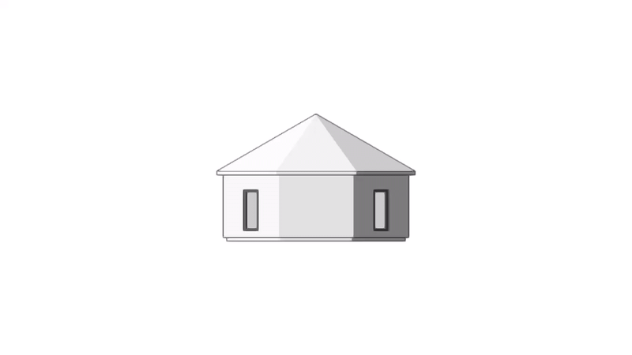

Overview of the BIMgent framework. Given the multimodal design requirements provided by the user, the Design Layer first transforms them into a refined floorplan and extracts the necessary semantic and geometric information to guide the modeling process. Based on the interpreted design information and domain knowledge, the Action Planning Layer hierarchically organizes the modeling procedure and decomposes it into detailed substeps, guided by the official software documentation. These substeps are then executed through specialized action workflows in the Execution Layer, each equipped with verification mechanisms. Execution trajectories are stored in a memory module, which supports both self-reflection and cooperation among different parts of the framework.
BIMgent generates BIM model in Vectorworks via GUI operations.
User's Input
Modeling Process
Result
Generate a one-storey office building with a large open workspace occupying most of the floor area. The layout should also include two enclosed meeting rooms, a manager’s office, a small pantry, and two restrooms.
Create a two-storey rectangular residential building designed for a single family. The layout must include a living room, kitchen, bathroom, master bedroom, and one additional bedroom.
Generate a one-storey octagonal building based on the hand-drawn sketch:

Generate a one-floor building based on the image:
Generate a building model based on a hand-drawn octagon floorplan, modifying the interior layout to include four rooms instead of three:
